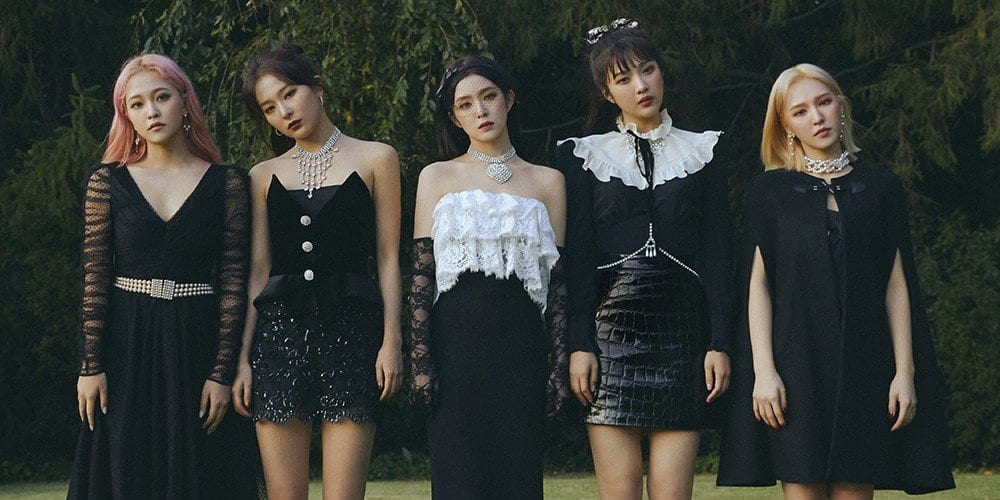
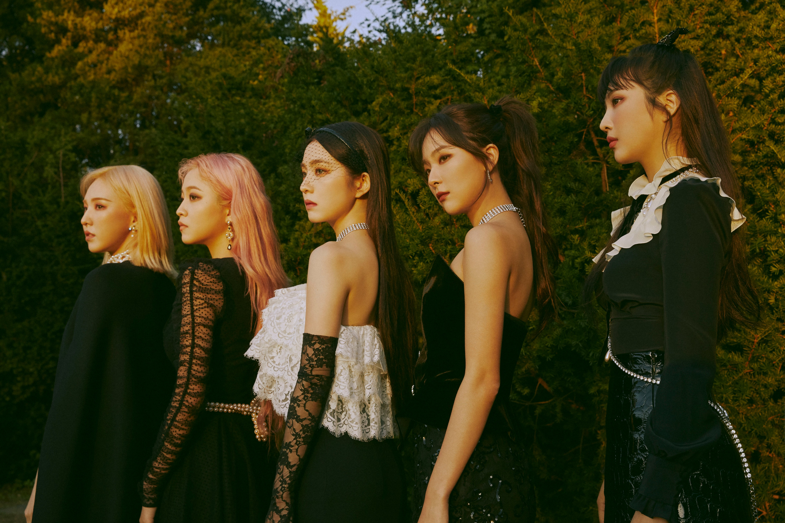

Kali ini, aku bakal rekomendasiin album-album Red Velvet yang aku suka, dan semoga kalian juga suka!
Psycho merupakan lagu utama atau title song dari album "The ReVe Festival; Finale". Lagu ini pas harus banget kalian dengerin, terutama untuk kalian yang suka musik R&B dengan sentuhan pop yang adiktif. Diawali dengan suara siren Seulgi, pasti pas awal dengerin lagu ini bikin kamu merinding, dikit. Makna dari lagu Psycho Red Velvet adalah kisah tentang dua sejoli yang berada di hubungan aneh. Satu sama lain memiliki perasaan cinta yang begitu dalam, namun sering bertengkar. Hingga orang-orang di sekitar mereka menganggap mereka adalah pasangan aneh. Pokoknya, lagu ini harus banget wajib kamu dengerin yaa!
Aku drop di sini deh, penggalan liriknya yang ngena banget:
우린 참 별나고 이상한 사이야서로를 부서지게 그리곤 또 껴안아
yang artinya "Kami berada di hubungan yang aneh, saling menghancurkan tetapi juga saling berpelukkan" Music Videonya juga gak kalah keren! Kalian harus banget wajib buat nonton, apalagi buat penonton pertama. Nih, aku cantumin link YouTubenya. Oh iya, gak cuma di YouTube, kalian juga bisa dengerin lagu ini lewat semua aplikasi streaming!
 Lagu kedua ini adalah lagu debutnya Yeri sebagai member terakhir Red Velvet! Lagu Pop yang upbeat bisa bikin kamu semangat!